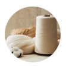
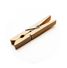
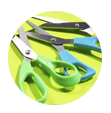
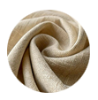
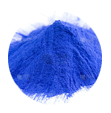

📜 扎染的由来
扎染是中国传统手工染色技艺，有着千年历史，是国家级非物质文化遗产之一。
🧵 扎染工具介绍

缝纫线

夹子

剪刀

棉布

染料
主要工具：白布、棉线、皮筋、夹子、染料、手套、水桶等。
🎨 扎染制作步骤
步骤：折叠 → 捆扎 → 染色 → 晾晒 → 展开成品。
🔮 虚拟扎染操作
请按照步骤进行虚拟扎染：1.选择折叠方式 → 2.选择工具捆扎 → 3.染色 → 4.展开查看效果
1. 折叠
2. 捆扎
3. 染色
4. 展开
请先选择工具
展开的正方形白布（300x300像素）
操作提示：
1. 选择折叠方式 → 2. 选择绳子工具 → 3. 下一步进入捆扎
4. 按住鼠标在布上画线 → 5. 下一步 → 6. 染色 → 7. 展开查看花纹
折叠效果说明：
- Z形折：四层折叠，展开后线条重复出现
- 中心折叠：围绕中心旋转，展开呈环形花纹
1. 选择折叠方式 → 2. 选择绳子工具 → 3. 下一步进入捆扎
4. 按住鼠标在布上画线 → 5. 下一步 → 6. 染色 → 7. 展开查看花纹
折叠效果说明：
- Z形折：四层折叠，展开后线条重复出现
- 中心折叠：围绕中心旋转，展开呈环形花纹